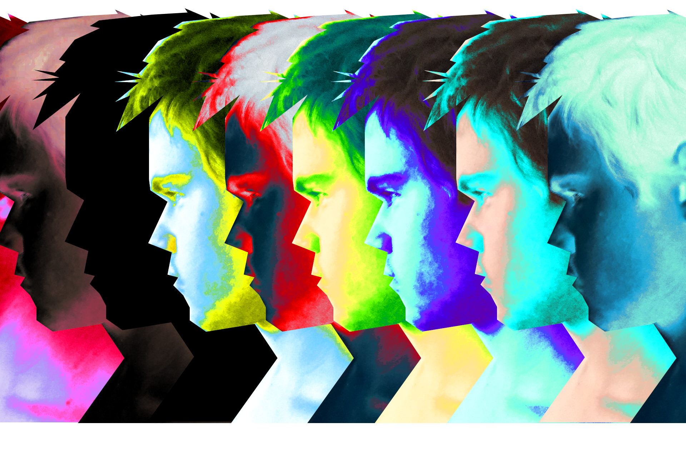

JACE ATICE PROUTION

"SYSTEM SOLAR" — це чудова колекція думок, почуттів і слів, які Jace намагається викрити своїми піснями, але про які він ніколи б нікому не сказав у реальному житті. Це та мета, яку він хоче досягти шляхом подорожі під назвою життя. Суперечлива, не радісна і не сумна, але сповнена захоплюючих моментів добірка, які сформували особистість артиста - такі випадки і навіть більше пропонується послухати в цьому проєкті. Ознайомтесья з попередніми переглядами та будьте в курсі останнійх подій на офіційній instagram сторінці.